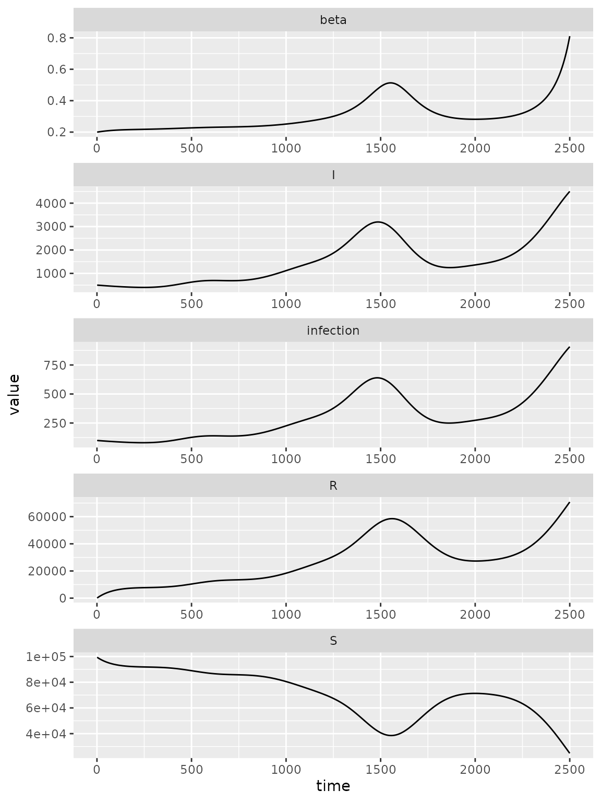
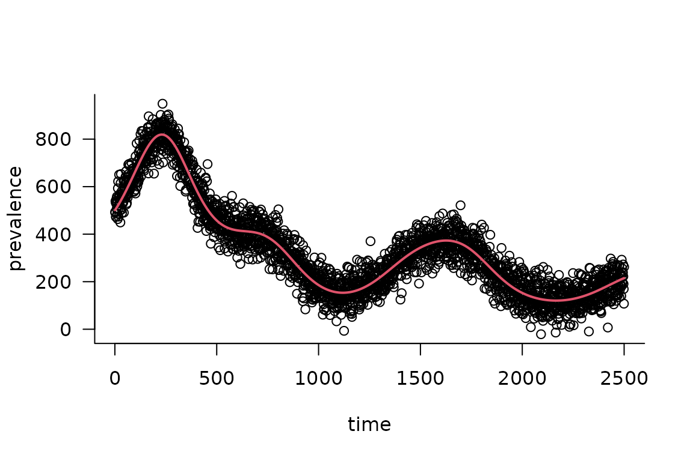

Specifying Time-Varying Parameters
Source:vignettes/time_varying_parameters.Rmd
time_varying_parameters.RmdBaseline SIR Model
Here we modify an SIR model so that transmission rate is time-varying.
We initialize a vector of state labels and parameter default values for convenience and specify a simulation time of 50 time steps.
state_labels = c("S", "I", "R")
time_steps = 50
beta = 0.8 # per-capita transmission rate
gamma = 0.2 # per-capita recovery rateUsing a fixed transmission rate of 0.8 we visualize the baseline SIR
dynamics.

Piecewise Time Variation
To create a piecewise time-varying transmission rate, we need to specify two variables:
-
beta_changepoints- An integer vector containing the starting time steps at which the tranmission ratebetachanges. This vector starts with a time step of 0 because we want to specify an initial default value ofbetafollowed by changing transmission rates at the beginning of time-step 10 and 15 -
beta_valuesA numeric vector containing the valuesbetatakes at each time step specified inbeta_changepoints.
We then need to specify an expression that updates beta
to beta_values at the time steps in
beta_changepoints. To do this we use the time_step
function to get the current time step for each iteration in the loop. We
specify a time lag of 0 from the current time step with
time_step(0) because we want the value of the current time
step.
We then use the time_var
function that will return a value for beta, from
beta_values, by comparing the current time step with the
time steps in beta_changepoints.
# see ?time_var for arguments
expr = list(
#beta ~ time_var(beta_values, beta_changepoints, time_step(1))
beta ~ time_var(beta_values, beta_changepoints)
)Let’s test that time_var is computing what we want for
20 time steps.
simple_sims(
iteration_exprs = expr
, time_steps = 20
# for integer vectors (usually indexing vectors) use `int_vecs`
, int_vecs = list(beta_changepoints = beta_changepoints)
# for numeric vectors (model defaults) use `mats`
# we need to initialize beta because it is a variable in our model
# so we set to 0.8 - at the beginning of the simulation loop (time_step==1)
# beta gets updated so the initial value of beta has no effect in this case
, mats = list(
beta = beta
, beta_values = beta_values)
) |> filter(matrix == "beta")
#> matrix time row col value
#> 1 beta 1 0 0 0.80
#> 2 beta 2 0 0 0.80
#> 3 beta 3 0 0 0.80
#> 4 beta 4 0 0 0.80
#> 5 beta 5 0 0 0.80
#> 6 beta 6 0 0 0.80
#> 7 beta 7 0 0 0.80
#> 8 beta 8 0 0 0.80
#> 9 beta 9 0 0 0.80
#> 10 beta 10 0 0 0.01
#> 11 beta 11 0 0 0.01
#> 12 beta 12 0 0 0.01
#> 13 beta 13 0 0 0.01
#> 14 beta 14 0 0 0.01
#> 15 beta 15 0 0 0.40
#> 16 beta 16 0 0 0.40
#> 17 beta 17 0 0 0.40
#> 18 beta 18 0 0 0.40
#> 19 beta 19 0 0 0.40
#> 20 beta 20 0 0 0.40Now that we know our expression is updating beta
correctly, we can modify the SIR model to include this piece-wise
transmission rate.
piecewise_spec = ("starter_models"
# read in model from library
|> mp_tmb_library("sir", package = "macpan2")
# insert expression for updating beta at the beginning of the simulation loop
|> mp_tmb_insert(
phase="during"
, at=1L
, expressions = expr
, default = list(
beta = beta # note this value doesnt not effect life
, gamma = gamma
, beta_values = beta_values
)
, integers = list(beta_changepoints = beta_changepoints))
)
print(piecewise_spec)
#> ---------------------
#> Default values:
#> ---------------------
#> matrix row col value
#> beta 8e-01
#> gamma 2e-01
#> N 1e+02
#> I 1e+00
#> R 0e+00
#> beta_values 0 8e-01
#> beta_values 1 1e-02
#> beta_values 2 4e-01
#>
#> ---------------------
#> Before the simulation loop (t = 0):
#> ---------------------
#> 1: S ~ N - I - R
#>
#> ---------------------
#> At every iteration of the simulation loop (t = 1 to T):
#> ---------------------
#> 1: beta ~ time_var(beta_values, beta_changepoints)
#> 2: infection ~ S * I * beta/N
#> 3: recovery ~ gamma * I
#> 4: S ~ S - infection
#> 5: I ~ I + infection - recovery
#> 6: R ~ R + recovery
piecewise_simulator = (piecewise_spec
|> mp_simulator(time_steps = time_steps, outputs=state_labels)
)Now we plot the updated simulations using these change-points, which we highlight with vertical lines.
# simulated data from model
sim_data = mp_trajectory(piecewise_simulator)
(sim_data
%>% mutate(state = factor(matrix, state_labels))
%>% ggplot()
+ geom_line(aes(time, value, colour = state))
+ geom_vline(
aes(xintercept = x),
linetype = "dashed",
alpha = 0.5,
data = data.frame(x = beta_changepoints)
)
)
The clear kinks at times 10 and 15 are due the drop and then lift of the transmission rate at these times.
Calibrating Time Variation Parameters
First we simulate data to fit our model to, to see if we can recover the time-varying parameters.
set.seed(1L)
I_observed = (sim_data
|> filter(matrix=="I")
# add some noise
|> mutate(value = rpois(n(),value))
)
plot(I_observed$time, I_observed$value)
We often want to include parameter constraints in our models, and one way to do this implicitly is to transform the parameters (Bolker 2008). Further, transformations can sometimes help when estimating parameters by making the “likelihood surface closer to quadratic” and reducing parameter correlation (Bolker 2008). Here we log-transform \(\beta\) because our constraint is that \(\beta\) must be positive and the domain of the logarithm is \((0, \infty)\).
# need to insert transformation
# not this simple, need to log transform beta_values
transformed_spec = mp_tmb_insert(
model = piecewise_spec
, phase = "before"
, at = 1
, expressions = list(beta_values ~ exp(log_beta_values))
, default = list(log_beta_values = log(beta_values))
)
transformed_spec
#> ---------------------
#> Default values:
#> ---------------------
#> matrix row col value
#> beta 0.8000000
#> gamma 0.2000000
#> N 100.0000000
#> I 1.0000000
#> R 0.0000000
#> beta_values 0 0.8000000
#> beta_values 1 0.0100000
#> beta_values 2 0.4000000
#> log_beta_values 0 -0.2231436
#> log_beta_values 1 -4.6051702
#> log_beta_values 2 -0.9162907
#>
#> ---------------------
#> Before the simulation loop (t = 0):
#> ---------------------
#> 1: beta_values ~ exp(log_beta_values)
#> 2: S ~ N - I - R
#>
#> ---------------------
#> At every iteration of the simulation loop (t = 1 to T):
#> ---------------------
#> 1: beta ~ time_var(beta_values, beta_changepoints)
#> 2: infection ~ S * I * beta/N
#> 3: recovery ~ gamma * I
#> 4: S ~ S - infection
#> 5: I ~ I + infection - recovery
#> 6: R ~ R + recovery
# piecewise_calib = mp_tmb_calibrator(
# spec = transformed_spec
# , data = I_observed
# , traj = "I"
# , par = "log_beta_values"
# # can we actully estimate a vector of betas, or only one beta
# #, tv = "beta"
# , outputs = state_labels
# # we don't need to update any defaults in
# # `spec`
#
# )
#
# mp_optimize(piecewise_calib)
# # if (piecewise_calib$optimization_history$get()[[1L]]$convergence != 0) {
# # stop("time-varying optimization example is no longer converging")
# # }
# # # looking at coefficients and CIs
# # # we need to back transform to interpret
# cc <- (mp_tmb_coef(piecewise_calib, conf.int=TRUE)
# |> backtrans()
# )
# cc
# beta_values
# the old way of calibrating
transformed_sim = transformed_spec |> mp_simulator(time_steps = time_steps, outputs = state_labels)
default_beta = mean(transformed_sim$get$initial("beta_values"))
params_to_fit = data.frame(
mat = "log_beta_values"
, row = 0:2
, default = log(default_beta)
)
transformed_sim$replace$params_frame(params_to_fit)
transformed_sim$optimize$nlminb()
#> outer mgc: 0
#> $par
#> params params params
#> -0.9079919 -0.9079919 -0.9079919
#>
#> $objective
#> [1] 0
#>
#> $convergence
#> [1] 0
#>
#> $iterations
#> [1] 1
#>
#> $evaluations
#> function gradient
#> 1 1
#>
#> $message
#> [1] "relative convergence (4)"Radial Basis Functions for Flexible Time Variation (In-Progress)
This section uses radial basis functions (RBFs) to generate models with a flexible functional form for smooth changes in the transmission rate.
Before we can add the fancy radial basis for the transmission rate, we need a base model. We use an SIR model that has been modified to include waning.
sir_waning = mp_tmb_library("starter_models"
, "sir_waning"
, package = "macpan2"
)The macpan2::rbf function can be used to produce a
matrix giving the values of each basis function (each column) at each
time step (each row). Using this matrix, \(X\), and a weights vector, \(b\), we can get a flexible output vector,
\(y\), with a shape that can be
modified by changing the weights vector.
\[ y = Xb \]
The following code illustrates this approach.
set.seed(1L)
d = 20
n = 2500
X = rbf(n, d)
b = rnorm(d, sd = 0.01)
par(mfrow = c(3, 1)
, mar = c(0.5, 4, 1, 1) + 0.1
)
matplot(X
, type = "l", lty = 1, col = 1
, ylab = "basis functions"
, axes = FALSE
)
axis(side = 2)
box()
barplot(b
, xlab = ""
, ylab = "weights"
)
par(mar = c(5, 4, 1, 1) + 0.1)
plot(X %*% b
, type = "l"
, xlab = "time"
, ylab = "output"
)
Here d is the dimension of the basis, or number of
functions, and n is the number of time steps. By
multiplying the uniform basis matrix (top panel) by a set of weights
(middle panel), we obtain a non-uniform curve (bottom panel). Note how
the peaks (troughs) in the output are associated with large positive
(negative) weights.
Now we want to transform the output of the (matrix) product of the RBF matrix and the weights vector into a time-series for the transmission rate, \(\beta\). Although we could just use the output vector as the \(\beta\) time series, it is more convenient to transform it so that the \(\beta\) values yield more interesting dynamics in an SIR model. In particular, our model for \(\beta_t\) as a function of time, \(t\), is
\[ \log(\beta_t) = \log(\gamma_t) + \log(N) - \log(S_t) + x_tb \]
Here we have the recovery rate, \(\gamma_t\), and number of susceptibles, \(S_t\), at time, \(t\), the total population, \(N\), and the \(t\)th row of \(X\), \(x_t\). To better understand the rationale for this equation note that if every element of \(b\) is set to zero, we have the following condition.
\[ \frac{\beta_t S_t}{N} = \gamma_t \]
This condition assures that the number of infected individuals remains constant at time, \(t\). This means that positive values of \(b\) will tend to generate outbreaks and negative values will tend to reduce transmission.
fixme: I (BMB) understand why you’re setting the model up this way, but it’s an odd/non-standard setup - may confuse people who are already familiar with epidemic models (it confused me initially).
Here is a simulation model with a radial basis for exogenous transmission rate dynamics.
set.seed(1L)
simulator = mp_simulator(sir_waning
, time_steps = n
, outputs = c("S", "I", "R", "infection", "beta")
, default = list(
N = 100000, I = 500, R = 0
, beta = 1, gamma = 0.2, phi = 0.01
, X = rbf(n, d)
, b = rnorm(d, sd = 0.01)
)
)
simulator$insert$expressions(
eta ~ gamma * exp(X %*% b)
, .phase = "before"
, .at = Inf
)
simulator$insert$expressions(
beta ~ eta[time_step(1)] / clamp(S/N, 1/100)
, .phase = "during"
, .at = 1
)
simulator$add$matrices(
eta = empty_matrix
)
simulator$replace$params(
default = rnorm(d, sd = 0.01)
, mat = rep("b", d)
, row = seq_len(d) - 1L
)
print(simulator)
#> ---------------------
#> Before the simulation loop (t = 0):
#> ---------------------
#> 1: S ~ N - I - R
#> 2: eta ~ gamma * exp(X %*% b)
#>
#> ---------------------
#> At every iteration of the simulation loop (t = 1 to 2500):
#> ---------------------
#> 1: beta ~ eta[time_step(1)]/clamp(S/N, 1/100)
#> 2: infection ~ S * I * beta/N
#> 3: recovery ~ gamma * I
#> 4: waning_immunity ~ phi * R
#> 5: S ~ S - infection + waning_immunity
#> 6: I ~ I + infection - recovery
#> 7: R ~ R + recovery - waning_immunity
(simulator
|> mp_trajectory()
|> ggplot()
+ facet_wrap(~ matrix, ncol = 1, scales = 'free')
+ geom_line(aes(time, value))
)
Calibration
Now we’re going to calibrate this model to data. The main innovation
here is that we will use a built-in feature of TMB (on which
macpan2 is constructed), estimation of latent variables by
Laplace
approximation to fit the time series efficiently without overfitting
(see section 5.10 of Madsen and Thyregod (2011), Kristensen et al. (2016), or the TMB
documentation for more detail).
The next few steps will roughly follow the first example in the Calibration vignette: TODO: make sure to line this state up with the specific code in the calibration vignette.
1. Simulate from the model and add some noise:
obs_I <- (simulator
|> mp_trajectory()
|> filter(matrix == "I")
|> mutate(across(value, ~ rnorm(n(), ., sd = 50)))
|> pull(value)
)
plot(obs_I, xlab = "time", ylab = "prevalence")2. Add calibration information.
We start by adding standard boilerplate stuff to include the observed data and store/return the results.
## copied from 'calibration/"hello world"' example
simulator$add$matrices(
I_obs = obs_I
, I_sim = empty_matrix
, log_lik = empty_matrix
, .mats_to_save = c("I_sim")
, .mats_to_return = c("I_sim")
)
simulator$insert$expressions(
I_sim ~ I
, .phase = "during"
, .at = Inf
)Now we start to deviate from the previous example: in addition to a
parameter (I_sd) for the standard deviation of the noise in
\(I\), we also add a parameter
(rbf_sd) for the variance of the RBF coefficients, and
penalize the likelihood using
\[ \begin{split} I_{\textrm{obs}} & \sim \textrm{Normal}(I_\textrm{sim}(\phi, {\mathbf b}), \sigma^2_I) \\ b_i & \sim \textrm{Normal}(0, \sigma^2_{\textrm{rbf}}) \end{split} \] and the likelihood is defined as: \[ \int {\cal L}(I_{\textrm{obs}}|\phi, {\mathbf b}', \sigma^2_I) \cdot {\cal L}({\mathbf b}'|\sigma^2_{\textrm{rbf}}) \, d{\mathbf b}. \]
The \(\phi\) vector is a set of fixed-effect (unpenalized) parameters; in this case it is empty, but it could include (for example) time-constant recovery or immune-waning rates, or a baseline transmission rate (see note below). (The fixed-effect parameter is usually denoted as \(\beta\) in statistical models, but we’ve already used that symbol for the transmission coefficient …)
Although this looks awful, (1) the high-dimensional integral over \(\mathbf b\) can be separated into a product of one-dimensional integrals and (2) the Laplace approximation gives us a quick, reasonable approximation to the one-dimensional integrals.
The rbf_sd parameter can be interpreted as a standard
deviation on a Gaussian random effect or as approximately \(1/\sqrt{\lambda}\) where \(\lambda\) is a ridge penalty.
Continuing with the coding, we add the parameters and negative
log-likelihood to the model, making the negative log-likelihood a
sum of the two terms in the integral above: the NLL of the data
(-sum(dnorm(I_obs, ...))) and the likelihood of the RBF
parameters (-sum(dnorm(b, ...))): we fit both of the SD
parameters on the log scale.
simulator$add$matrices(
I_sd = 1
, rbf_sd = 1
)
simulator$insert$expressions(
log_lik ~
-sum(dnorm(I_obs, rbind_time(I_sim), I_sd)) +
-1*sum(dnorm(b, 0.0, rbf_sd)),
.phase = "after"
)
## initially forgot this: maybe we could warn when someone is missing this????
simulator$replace$obj_fn(~ log_lik)
simulator$add$transformations(Log("I_sd"))
simulator$add$transformations(Log("rbf_sd"))
## not sure if this is required?
params <- read.delim(sep = "|", header = TRUE,
strip.white = TRUE, ## important!
text = "
mat | default
log_I_sd | 0
log_rbf_sd | 1
")
simulator$replace$params_frame(params)Finally, we add the b vector as a set of random
parameters: this tells macpan2 to apply the Laplace
approximation to these parameters …
matrix_version = "1.6-5"
if (packageVersion("Matrix") >= matrix_version) {
rparams <- data.frame(
mat = "b",
row = 0:19,
col = 0,
default = 0)
simulator$replace$random_frame(rparams)
}Test the objective function:
if (packageVersion("Matrix") >= matrix_version) {
res <- simulator$ad_fun()$fn(c(1,1))
}
#> Optimizing tape... Done
#> iter: 1 value: 5994496 mgc: 2058657968 ustep: 1
#> iter: 2 value: 1327494 mgc: 1334286157 ustep: 1
#> iter: 3 value: 539106 mgc: 359174176 ustep: 1
#> iter: 4 value: 461675.4 mgc: 72820581 ustep: 1
#> iter: 5 value: 458020.4 mgc: 9231141 ustep: 1
#> iter: 6 value: 457980.9 mgc: 605743.9 ustep: 1
#> iter: 7 value: 457980.9 mgc: 7692.96 ustep: 1
#> iter: 8 value: 457980.9 mgc: 2.548907 ustep: 1
#> iter: 9 value: 457980.9 mgc: 9.201847e-06 ustep: 1
#> mgc: 9.53875e-06#> [1] 458152.8
#> attr(,"logarithm")
#> [1] TRUEfixme: can’t get objective function to shut up.
Should have specified silent = TRUE when calling
MakeADFun() initially, now have tried assigning the value
in several different environments, without success …
This step normally produces lots of output (more output than a model
with random effects) because the Laplace approximation involves an
additional “inner” step where the b parameters are
optimized, even though we are only evaluating the objective for a single
set of fixed parameters (log_I_sd,
log_rbf_sd)
fixme: note to developers, if we cache results we
may need to call the $retape() function to restore internal
structure when retrieving …
if (packageVersion("Matrix") >= matrix_version) {
## testing: simulator$ad_fun()$fn()
fit <- simulator$optimize$nlminb()
}
if (packageVersion("Matrix") >= matrix_version) {
## simulator$print$matrix_dims()
## fixed effects only:
## look at parameters, but skip the random-effects parameters
## 'random' holds the indices of the parameters that are treated
## as random effects
(fixed_params <- with(simulator$ad_fun()$env,
last.par.best[-random]))
## ???
## RE only
(ran_params <- with(simulator$ad_fun()$env,
last.par.best[random]))
}
#> random random random random random
#> 0.0067466350 0.0116662413 -0.0036351505 -0.0151989880 0.0011403827
#> random random random random random
#> 0.0032615158 -0.0028962068 -0.0146686471 -0.0058110019 0.0073568463
#> random random random random random
#> 0.0097221102 0.0023726453 0.0007574901 0.0014761570 -0.0134865091
#> random random random random random
#> -0.0068787221 -0.0025147741 0.0027382985 0.0086679247 0.0033013692fixme: we need an incantation to extract the full
parameters (including RE parameters) in order to make sure
$report works properly? (In general, should caution about
mutability/make sure we use last.par.best internally …)
Extract parameters, run the simulator for the best-fit parameters, compare with data …
if (packageVersion("Matrix") >= matrix_version) {
pp <- simulator$ad_fun()$env$last.par.best ## FIXME: use this
est_I <- (simulator
|> mp_trajectory()
|> filter(matrix == "I")
|> pull(value)
)
par(las = 1, bty = "l")
plot(obs_I, xlab = "time", ylab = "prevalence")
lines(est_I, col = 2, lwd = 2)
}
fixme: there are a few artificialities about this example that could/should be relaxed
- the only fixed parameters are the standard deviations. Normally we
would also be estimating
gamma(possibly with a prior? do we have any examples, say in the calibration vignette, of adding priors?) - the RBF function is penalized to zero. In general, we should augment
the penalized RBF component (which determines the variation around the
mean) with an unpenalized intercept/baseline transmission parameter. So,
for example, the transmission rate should be computed as
b0 + exp(X %*% b), whereb0represents an unpenalized parameter that’s allowed to vary freely …
fixme: compare (1) unpenalized fit; (2) penalized fit without Laplace approximation …
fixme: discuss (somewhere) alternate bases for latent variables (random-walk, Gaussian process, …)